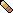
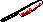

Valerians horn? has a unicorn lost their horn, so their mercy for any being leaves, let the monster from within unleash
Rav's skateboard—he got it from his dad! Really needs some repairing.
 The power of veroni's pencil, bring the power of creativity alive
 "The beautiful sharp object that can cut through anything cleanly... I'm worried about where it has last been.
Rock music, alt rock, metal rock, even death rock! The joy of all types of rock is beautifully laid through Elliot's hand!
The only "comfort" technically to hilda's awful precious life
GO BACK TO THE CAST SECTION


 Copyright © 2024 Skullmare All rights reserved.
Copyright © 2024 Skullmare All rights reserved.